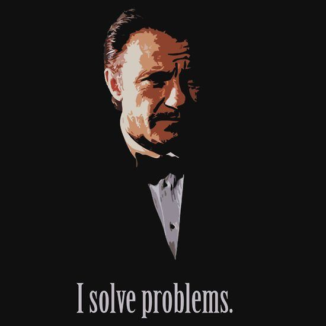

Approach
Direct execution, explicit assumptions, and a default preference for the smallest effective change that solves the real problem.
Execution engineer
I build and repair web systems with a bias for clarity, direct execution, and tools that feel like serious instruments.
Azure, GitHub, AI, delivery pipelines, and the stubborn parts of websites that need someone careful enough to make them hold.

Afterword
This is a small public surface, not a performance of breadth. It is here to communicate how I work: carefully, directly, and with a strong preference for systems that remain legible under pressure.
I like pages, products, and delivery pipelines that know what they are for. Fewer moving parts when possible. Clear ownership. Real constraints acknowledged instead of decorated over.
Colophon
Enough context to understand the operator behind the page, without padding it into a brochure.
Direct execution, explicit assumptions, and a default preference for the smallest effective change that solves the real problem.
Windows-first workflow. Azure-hosted websites. GitHub Enterprise. Entra ID. Environment separation that actually matters.
I value work that can be inspected. Source, decisions, and visible artifacts are part of the product, not backstage clutter.
View repositoryManifesto
I’m more interested in coherence than novelty, and more interested in tools that hold up under use than interfaces that just mimic polish.
That taste shows up in software, infrastructure, writing, and even a page like this. If a system hides complexity with theatre instead of resolving it, I lose interest quickly.
Precision matters. So does restraint. The point is not to remove personality. It is to let the right details carry the weight.
Selected Paths
01
Repositories, fixes, and visible artifacts matter to me because they turn process into something inspectable instead of mythical.
Open source02
Azure hosting, Front Door, deployment pipelines, and the practical work of keeping environments honest and releases controlled.
03
I’m interested in AI when it is grounded in real workflows, clear interfaces, and operational discipline rather than demo fog.
Final Note
I’d rather publish a page with a clear point of view than a wide, forgettable one. This version keeps the focus where it belongs: on work, taste, and execution.
Public path
github.com/matthendrix